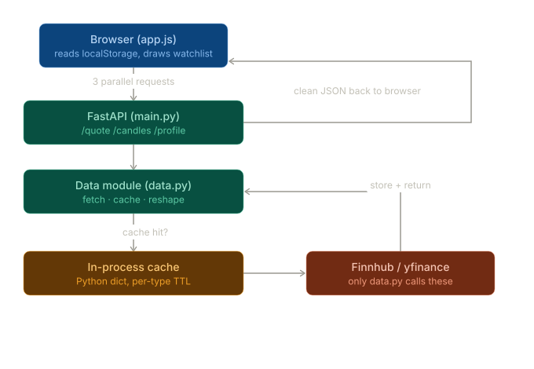
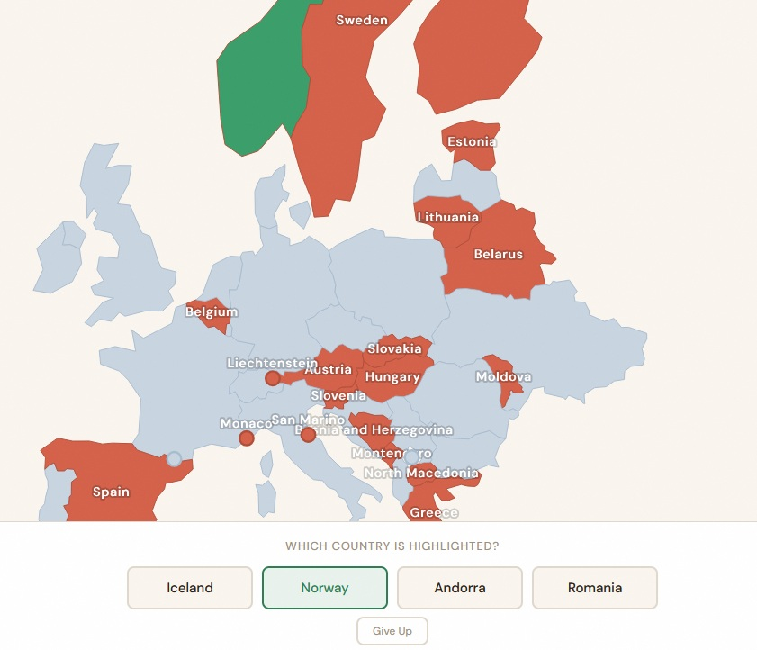
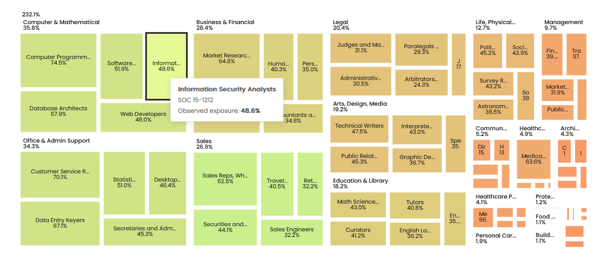
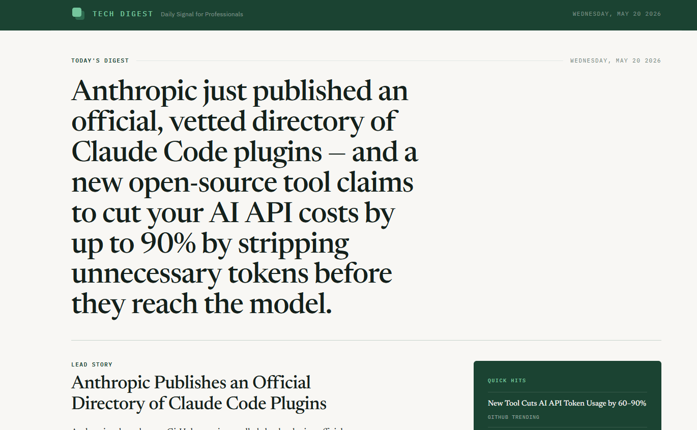

Web apps and sites running right now
open one and try

appA no-login finance site for comparing stocks, reading news, tracking a watchlist with charts, and copying finance prompts.

liveA geography fill-in game. Type country names onto a blank map and watch it fill in. A small experiment in turning rote learning into something playable.

siteMultipage static site for Anti-AI, AI Club. Visitors pick which AI topics they care about — that's the signal for what to cover. A curated feed of articles worth reading.

newsDaily tech digest. Fetches AI and dev tools news from high-signal sources and summarizes with Claude. Updated every day.